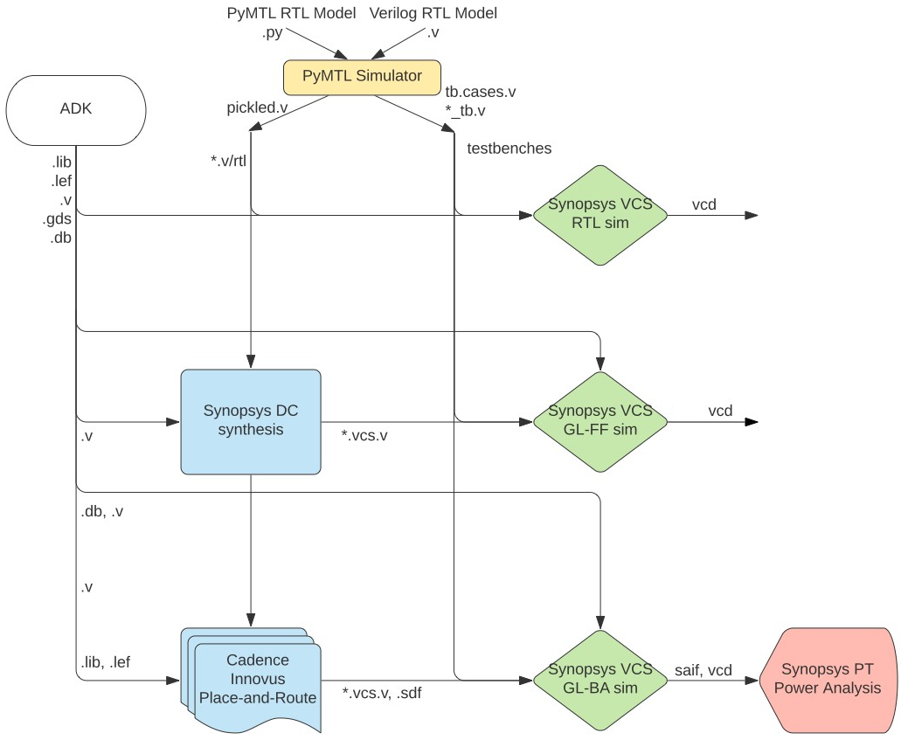

ECE 6745 Section 3: ASIC Automated Flow
In the previous sections, we manually commands entering commands for each tool to take a design from RTL to layout. Flow scripts can help automate the process but copying and modifying these flow scripts for every design is tedious and error prone. An agile hardware design flow demands automation to simplify rapidly exploring the area, energy, timing design space of one or more designs. In this section, we will introduce a simple tool called pyhflow which takes as input a step templates and a design YAML and generates appropriate flow scripts.
The following diagram illustrates the five primary tools we have already seen in the previous discussion sections. Notice that the ASIC tools all require various views from the standard-cell library.

Extensive documentation is provided by Synopsys and Cadence for these ASIC tools. We have organized this documentation and made it available to you on the public course webpage:
The first step is to access ecelinux. Use Microsoft Remote Desktop to
log into a specific ecelinux server. Then use VS Code to log into the
same specific ecelinux server. Once you are at the ecelinux prompt,
source the setup script, source the GUI setup script, clone this
repository from GitHub, and define an environment variable to keep track
of the top directory for the project.
% source setup-ece6745.sh
% source setup-gui.sh
% mkdir -p $HOME/ece6745
% cd $HOME/ece6745
% git clone git@github.com:cornell-ece6745/ece6745-sec03-asic-auto sec03
% cd sec03
% export TOPDIR=$PWD
1. Testing, Simulation, and Translation
As in the last section, we will be using the following four-stage registered incrementer as our example design:

Before we can use the ASIC flow, we need to verify the design and generate the corresponding Verilog files for each test which can be used for RTL simulation, fast-functional gate-level simulation, and back-annotated gate-level simulation. Always run the tests before pushing anything through the ASIC flow. There is no sense in running the flow if the design is incorrect!
% mkdir -p $TOPDIR/sim/build
% cd $TOPDIR/sim/build
% pytest ../tut3_verilog/regincr --test-verilog --dump-vtb
You can run the interactive simulator for our four-stage registered incrementer like this:
% cd $TOPDIR/sim/build
% ../tut3_verilog/regincr/regincr-sim 0xff 0x20 0x30 0x04 0x00
% less RegIncrNstage__p_nstages_4__pickled.v
You should now have the Verilog that we want to push through the ASIC flow.
2. pyhflow For Generating Flows
pyflow is based on the idea of step templates which are located in the
asic/steps directory.
% cd $TOPDIR/asic/steps
% tree
.
├── 01-synopsys-vcs-rtlsim
│ └── run
├── 02-synopsys-dc-synth
│ ├── run
│ └── run.tcl
├── 03-synopsys-vcs-ffglsim
│ └── run
├── 04-cadence-innovus-pnr
│ ├── run
│ ├── run.tcl
│ └── setup-timing.tcl
├── 05-synopsys-vcs-baglsim
│ └── run
├── 06-synopsys-pt-pwr
│ ├── run
│ └── run.tcl
└── 07-summarize-results
├── run
└── summarize-results
Each step is a directory with a run script and possibly other scripts. The key difference from the scripts we used in the previous tutorials, is that these scripts are templated using the Jinja2 templating system:
Open the run.tcl script in the 02-synopsys-dc-synth step template
which uses Synopsys DC for synthesis.
Notice how the run.tcl script is templated based on the design name and
the target clock period.
analyze -format sverilog $env(TOPDIR)/sim/build/{{design_name}}__pickled.v
elaborate {{design_name}}
create_clock clk -name ideal_clock1 -period {{clock_period}}
The {{ }} directive is the standard syntax for template variable
substitution using Jinja2.
The pyhflow program takes as input a design YAML file which specifies:
- what steps make up the flow
- key/value pairs for variables to substitute into scripts
- list of tests
- list of evals
Take a look at the provided design YAML file for the registered incrementer.
% cd $TOPDIR/asic/designs
% cat sec03-regincr.yml
steps:
- 01-synopsys-vcs-rtlsim
- 02-synopsys-dc-synth
- 03-synopsys-vcs-ffglsim
- 04-cadence-innovus-pnr
- 05-synopsys-vcs-baglsim
- 06-synopsys-pt-pwr
- 07-summarize-results
src_dir : ../../../sim/build
design_name : RegIncrNstage__p_nstages_4
clock_period : 1.0
dump_vcd : true
tests:
- RegIncrNstage__p_nstages_4_test_4stage_large
- RegIncrNstage__p_nstages_4_test_4stage_overflow
- RegIncrNstage__p_nstages_4_test_4stage_random
- RegIncrNstage__p_nstages_4_test_4stage_small
evals:
- RegIncrNstage__p_nstages_4_regincr-sim-basic
This design YAML file specifies the generated flow should use all seven
steps. We run RTL sim, FFGL sim, and BAGL sim on all tests and evals, but
we only do energy analysis on the evals. The evals usually come from
running an interactive simulator like regincr-sim. All pyhflow does is
use the YAML file to figure out what to substitute into the templated
steps and then copy the run scripts into the current working directory.
You can also override parameters on pyhflow command line.
1.1. Running ASIC Flow with One Test
Let's go ahead and use pyhflow to generate the flow scripts for the registered incrementer.
% mkdir -p $TOPDIR/asic/build-sec03-regincr
% cd $TOPDIR/asic/build-sec03-regincr
% pyhflow --one-test ../designs/sec03-regincr.yml
The --one-test command line option tells pyhflow to only include the
first test and no evals in the flow scripts. This is a useful way to get
started with a single test and reduces the overall runtime of the flow.
Once we know that everything works with one test we can circle back and
regenerate the flow scripts with all of the tests and evals.
Let's see how the step template has been filled in for the Synopsys DC synthesis step.
% cd $TOPDIR/asic/build-sec03-regincr
% cat 02-synopsys-dc-synth/run.tcl
...
analyze -format sverilog $env(TOPDIR)/sim/build/RegIncrNstage__p_nstages_4__pickled.v
elaborate RegIncrNstage__p_nstages_4
create_clock clk -name ideal_clock1 -period 1.0
Notice how the name of the source Verilog RTL File, the top-level modulename, and the clock period have all been filled in.
After generating a flow, we always recommend explicitly running at least the first two steps to ensure there are no errors. You can run the four-state RTL simulation as follows.
Make sure the step can find the source files and passes the test. Then run synthesis as follows.
Carefully look at the output from the synthesis step (also stored in the
run.log file). Look for the output after Running PRESTO HDLC for any
warnings to ensure that all of your Verilog RTL is indeed synthesizable.
Scan through the rest of the logs to ensure there are no worrying
warnings or errors.
Once you have explicitly run the first two steps to ensure there are no errors, you can run the remaning steps.
% cd $TOPDIR/asic/build-sec03-regincr
% 03-synopsys-vcs-ffglsim
% 04-cadence-innovus-pnr
% 05-synopsys-vcs-baglsim
% 06-synopsys-pt-pwr
% 07-summarize-results
If all looks good, then you would regenerate the with all of the tests
and evals; however, we will stick to just running one test though to save
time in this discussion section. pyhflow will also create a run-flow
script which will run all of the steps in sequence for you, but only use
this if you are confident there are no errors!
For the results to be valid, the following must be true:
- all four-state RTL simulations pass
- all fast-functional gate-level simulations pass
- all back-annotated gate-level simulations pass
- place-and-route setup slack is positive
- place-and-route hold slack is positive
If your design does not meet timing after synthesis but does meet timing after place-and-route then these are still valid results. It just means Synopsys DC was conservative and/or Cadence Innovus did a good job further optimizing the design.
1.3. Interactive Debugging
Let's start Cadence Innovus in interactive mode and then load the design.
You can use Cadence Innovus to analyze the static timing of any path in the design. For example, let's look at the static timing for a path in the first stage:
innovus> report_timing -path_type full_clock -net \
-from v/gen[0].reg_incr/reg_out_reg[0] \
-to v/gen[1].reg_incr/reg_out_reg[0]
You can use the Amobea workspace to help visualize how modules are mapped across the chip. Choose Windows > Workspaces > Amoeba from the menu. However, we recommend using the design browser to help visualize how modules are mapped across the chip. Here are the steps:
- Choose Windows > Workspaces > Design Browser + Physical from the menu
- Hide all of the metal layers by pressing the number keys
- Browse the design hierarchy using the panel on the left
- Right click on a module, click Highlight, select a color
Go ahead and highlight each stage in a different color.
You can use the following steps in Cadence Innovus to display where the critical path is on the actual chip.
- Choose Timing > Debug Timing from the menu
- Click OK in the pop-up window
- Right click on first path in the Path List
- Choose Highlight > Only This Path > Color
Finally, you can use Klayout to capture a screen shot demonstrating that you have successfully taken a design from RTL to layout.
% cd $TOPDIR/asic/build-sec03-regincr
% klayout -l $ECE6745_STDCELLS/klayout.lyp 04-cadence-innovus-pnr/post-pnr.gds
You can use Display > Full Hierarchy to show all of the layout including the layout inside the standard cells. You can use Display > Decrement Hierarchy and Display > Decrement Hierarchy to show/hide the layout inside the standard cells to focus on the routing. Consider hiding M7, VIA7, M8, VIA8, and M9 to just show the clock and signal routing. Try toggling View > Show Cell Frames to show/hide the standard cell bounding boxes.
1.5. Key Reports
Let's look at some reports. Let's start by looking at the synthesis resources report.
% cd $TOPDIR/asic/build-sec03-regincr
% cat 02-synopsys-dc-synth/resources.rpt
...
===============================================================================
| | | Current | Set |
| Cell | Module | Implementation | Implementation |
===============================================================================
| add_x_1 | DW01_inc | apparch (area) | |
===============================================================================
This means that Synopsys DC is using a DesignWare module named
DW01_inc. You can read the datasheet here:
Notice that DesignWare provides four different microarchitectures: a ripple-carry adder, a carry-look-ahead adder, a delay optimized parallel-prefix adder, and an area-optimized parallel-prefix adder. Synopsys DC has chosen to use the area-optimized parallel-prefix adder in this case.
Now let's look at the place-and-route setup and hold time reports.
% cd $TOPDIR/asic/build-sec03-regincr
% cat 04-cadence-innovus-pnr/timing-setup.rpt
% cat 04-cadence-innovus-pnr/timing-hold.rpt
We can also look at the detailed area report.
3. Case Studies
Now that we know how to push a design through the automated flow, let's consider two different case studies: (1) decreasing the clock period constraint; and (2) flattening the design.
3.1. Decreasing the Clock Period Constraint
We can use pyhflow to regenerate the flow with a different clock period
by either: (1) changing the design YAML file (i.e., sec03-regincr.yml);
or (2) specifying the clock period on the pyflow command line. Let's use
the second approach. If you look at the setup timing report you will see
with a 1ns clock period you have maybe 550ps of positive slack. So a good
starting point would be to maybe try a clock period of 1ns - 550ps =
450ps. Let's try 400ps.
% mkdir -p $TOPDIR/asic/build-sec03-regincr-decrease-clk
% cd $TOPDIR/asic/build-sec03-regincr-decrease-clk
% pyhflow --one-test --clock_period=0.400 ../designs/sec03-regincr.yml
% ./run-flow
Notice how we are working in a new build directory. You can use multiple
build directories to build different blocks through the flow and/or for
design-space exploration. Also notice how we are using --one-test so we
can quickly experiment with pushing the design through the flow with a
single test and no evals. You could continue to decrease the clock period
in 100ps increments until the design no longer meets timing, but for now
we will just stick with the shorter 400ps clock period. Do not be too
zealous and push the tools to try and meet a clock period constraint that
is way too small! This can cause the tools to freak out and run
forever.
Now compare the results from the longer and shorter clock periods. Start by looking at the summary statistics. How does the number of standard cells and area compare? We can also look at what kind of adder implementation Synopsys DC chose to meet the shorter clock period constraint.
% cd $TOPDIR/asic
% cat build-sec03-regincr/02-synopsys-dc-synth/resources.rpt
% cat build-sec03-regincr-decrease-clk/02-synopsys-dc-synth/resources.rpt
Here we can see Synopsys DC has chosen to use a different version of the parallel-prefix adder which is now optimized for both area and speed.
We can also look compare the critical path; you should be able to see that the design with the shorter clock period has many fewer levels of logic on the critical path.
% cd $TOPDIR/asic
% cat build-sec03-regincr/04-cadence-innovus-pnr/timing-setup.rpt
% cat build-sec03-regincr-decrease-clk/04-cadence-innovus-pnr/timing-setup.rpt
3.1. Flattening the Design
Let's modify our scripts to flatten our design and see how this impacts various metrics. We can run pyhflow to instantiate the flow scripts and then modify these flow scripts in the build directory. Use the shortest clock period that still meets timing from the previous case study.
% mkdir -p $TOPDIR/asic/build-sec03-regincr-flatten
% cd $TOPDIR/asic/build-sec03-regincr-flatten
% pyhflow --one-test --clock_period=0.400 ../designs/sec03-regincr.yml
% code 02-synopsys-dc-synth/run.tcl
Where XX is the shortest clock period which meets timing. We are
currently using the following command in 02-synopsys-dc-synth/run.tcl
to synthesize our design.
Change this by removing -no_autoungroup.
Now run the flow.
Revisit the post-synthesis gate-level netlist without flattening.
Notice how the original gate-level netlist preserves the logical hierarchy. Now look at the post-synthesis gate-level netlist with flattening.
Now notice who all of the logical hierarchy is gone and all of the gates are in a single "flat" module. Compare the area without and with flattening.
% cd $TOPDIR/asic
% cat build-sec03-regincr-decrease-clk/04-cadence-innovus-pnr/area.rpt
% cat build-sec03-regincr-flatten/04-cadence-innovus-pnr/area.rpt
Because the flattened module lacks logical hierarchy we cannot see the hierarchical breakdown. The advantage of flattening is that it can improve the area and also potentially enable a shorter clock period, but the disadvantage is that it significantly complicates our ability to deeply understand the area, energy, and timing of our designs and thus effectively explore an entire design space. So we will primarily turn off flattening in this course.
Note that if we wanted to make it easier to experiment with flattening, we could modify the synthesis step template like this:
{% if flatten is defined and flatten %}
compile_ultra -gate_clock
{% else %}
compile_ultra -no_autoungroup -gate_clock
{% endif %}
Then in your design YAML file you can add this to control whether
flattening is turned on or off; or we can specify the value of the
flatten parameter as a pyhflow command line option (i.e., with
--flatten=true).
Students should feel free to modify the step templates and/or the design YAML files for their labs and/or projects to experiment with the ASIC flow.